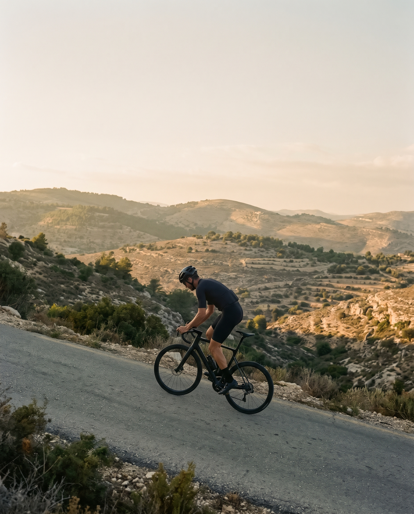

FIG. 1.1
ועדת חקירה, תיק מס' 1
האם צבע האופניים משפיע על המהירות?
שכבת צבע
0.1–0.2 mm · ≈50 g
השפעה על המהירות
≈ 0
1,000 mm
עמוד
אין שאלות טיפשיות
סדרה
ועדת חקירה
שקף
1/7
@no.dumb.questions.cycling
דוגמה לעיצוב
FIG. 2.3
למה עלייה מרגישה ארוכה יותר ממה שהיא?

זווית הייאוש
35°
מרחק לקפה הבא
unknown
14°
רוכב בעלייה, מבט צד. הקנה מידה של הסבל: לא בקנה מידה.
FIG. 2.3
עמוד
אין שאלות טיפשיות
סדרה
השאלה של היום
שקף
1/6
@no.dumb.questions.cycling
דוגמה לעיצוב
FIG. 3.1
מסלול בשאלה
יש רכיבה שטוחה ליד תל אביב?
1
2
3
4
N
0
1 km
נחל
הפרש גובה כולל
≈ nothing
profile
עמוד
אין שאלות טיפשיות
סדרה
מסלול בשאלה
שקף
1/5
@no.dumb.questions.cycling
דוגמה לעיצוב
FIG. 4.2
תיקון בשרטוט: החלפת פנימית
שלב 2: משחררים את הפיה
נגד כיוון השעון
2–3 turns
אום נעילה
lock nut
עמוד
אין שאלות טיפשיות
סדרה
תיקון בשרטוט
שקף
3/8
@no.dumb.questions.cycling
00:00:07:12
FIG. 5.4
מיתוס או אמת:
כמה לנפח את הצמיג?
המספר כתוב כאן
50–85 PSI
לחץ האוויר הנכון כתוב על הצמיג עצמו.